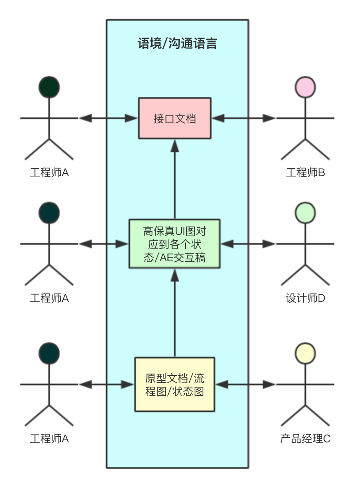

上周有项目需求会找我要技术方案，开会前我是看了原型Axure稿件的，但有一个需求在原型上的体现很微弱，只有“呼叫”按钮。但这个按钮发起的行为，与其交互的程序也没体现。你不知道是语音呼叫还是视频呼叫，以及各自出现的情形会是如何。假设这个需求是基于已有的实现做的变更，需求背景也没提及，而且做这个项目的是个刚转正的工程师。
整理原型的需求后，在群里吐槽了这个原型的交付很粗糙。
如今是个Web富应用的时代，后端大部分都为接口服务，接口的描述以及会发生异常，都尽可能详尽。往往这也是专业度的体现。
在软件工业中，肯定不止软件工程师一个角色，还有其他角色：产品经理，UI设计师，交互设计师，项目经理…。

工程师要对接的，也不限于工程师。保证沟通介质的质量是保证高效沟通的前提。这不清楚跑去问下，那不清楚群里@下，频率少还能接受，经常性的你蛋不蛋疼？作为工程师，减少自己的麻烦和减少别人的麻烦是必要素质。私以为这个素质适用在职场中的任何人，做好一个“接口人”。
在大学时期，我是个业余交互设计师，那会儿非常流行“人人都是产品经理”的说法，在接触到这个领域并开始往这深入学习时发现，产品经理不是出几个原型图就完事，就好比设计师出的设计图，这些产出是如何解释需求，如何自我表达非常关键。一个产品/作品体现了设计者的价值观和个人情怀，体现了设计者对待现实世界的方式。那会儿我觉得自己做不好产品经理，太年轻，太短视，对世界的了解非常匮乏。当然现在也做不好。